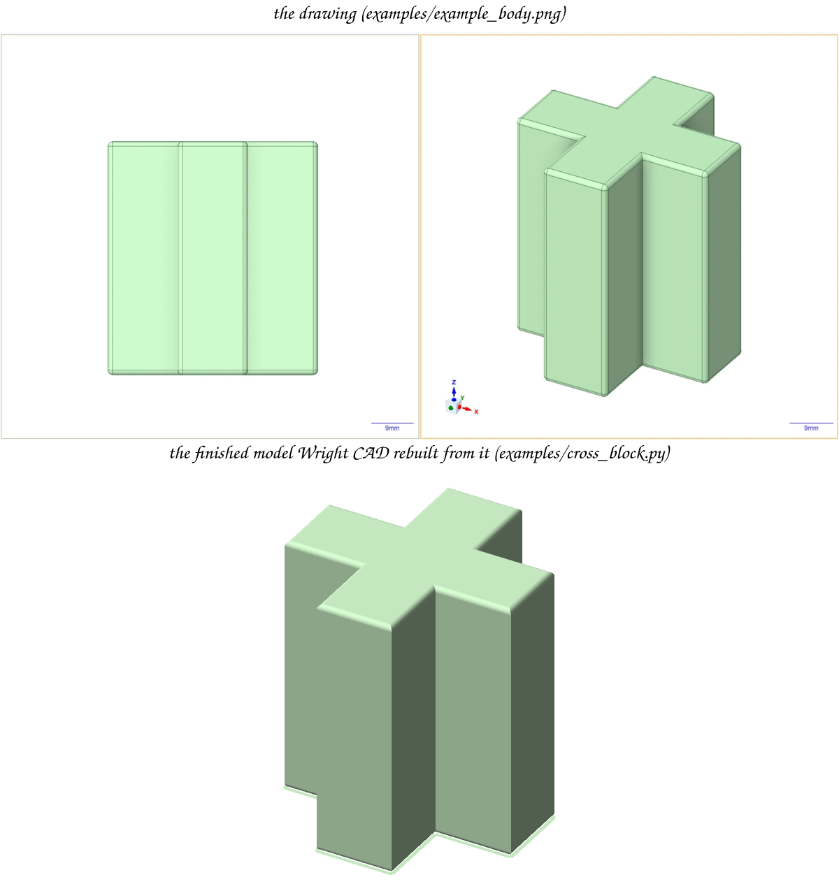
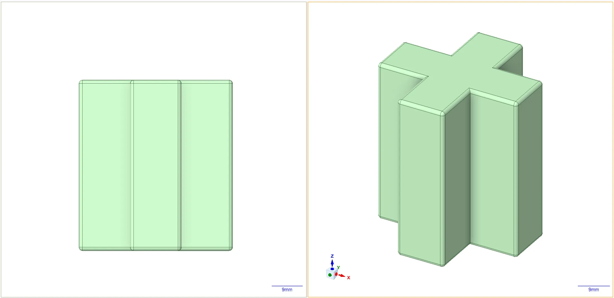
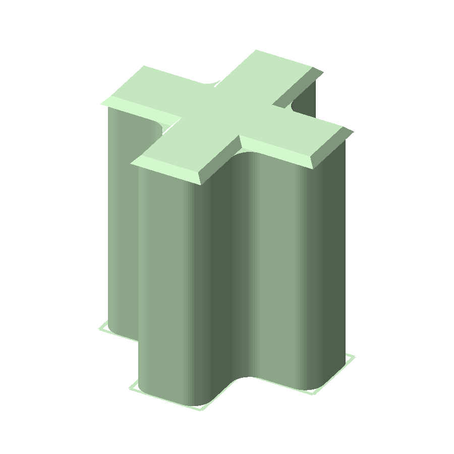
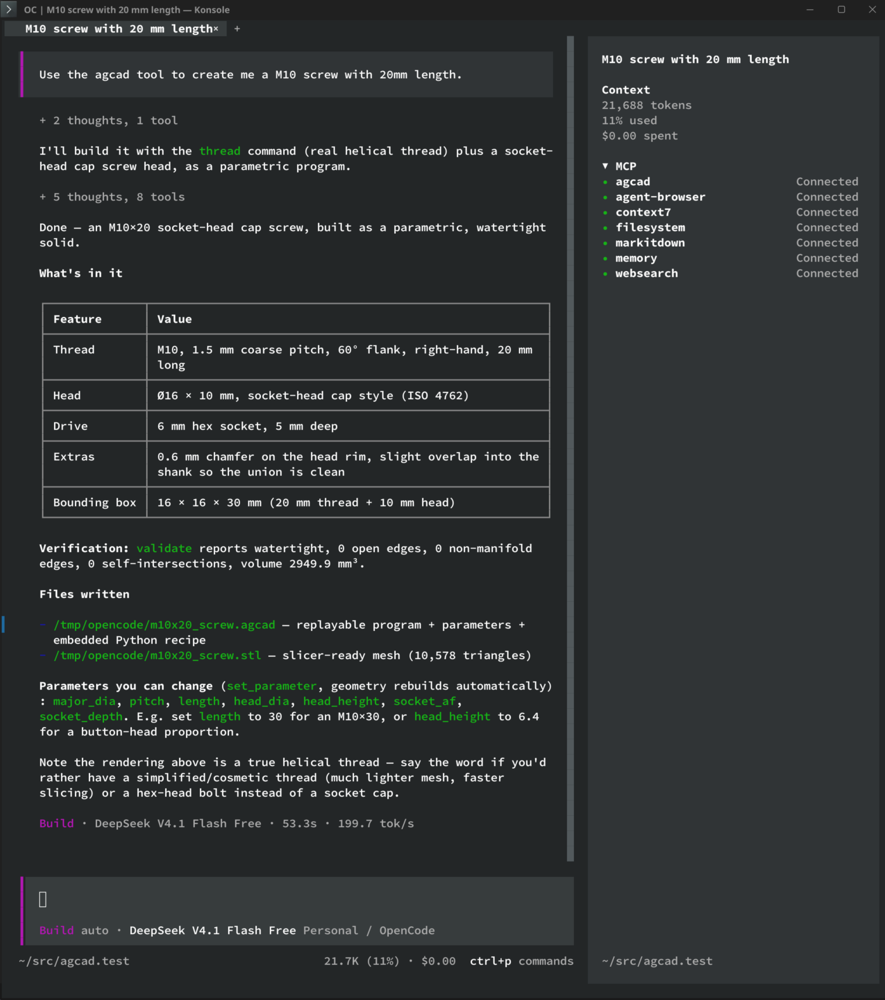
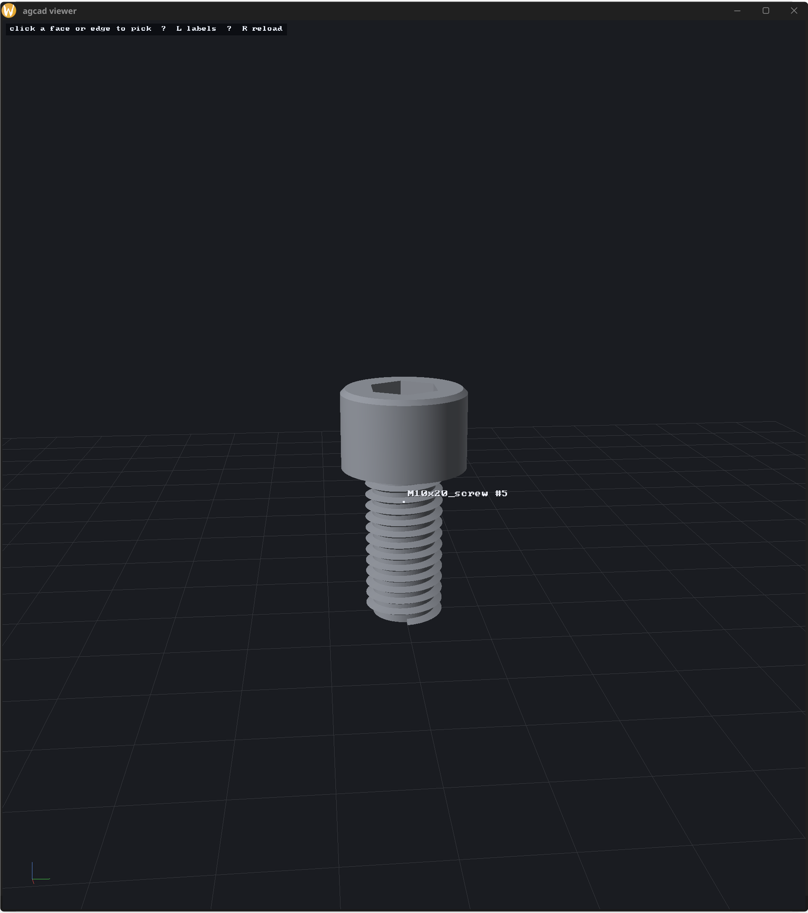
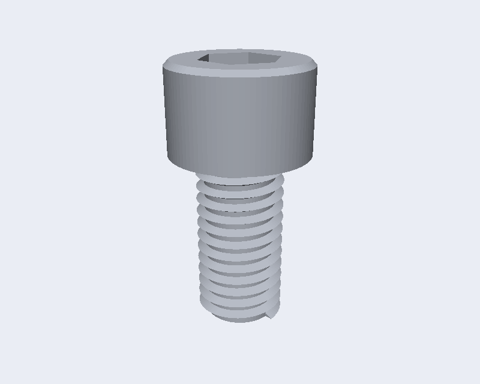
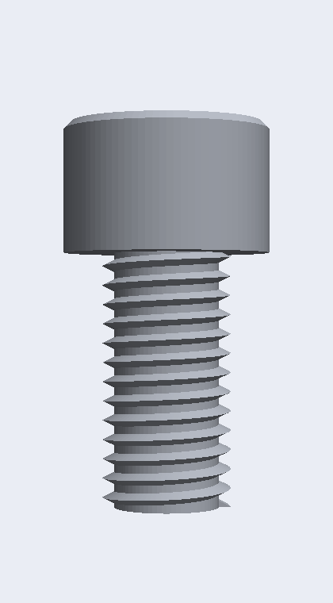

Wright CAD is a headless parametric CAD. The agent writes a short script, the engine builds watertight solids, and you get STL and 3MF files ready for the slicer. The viewer is just another client.

The agent doesn't edit a feature tree. It authors a parametric program with named parameters and expressions, then turns knobs. Every change re-executes the program but only regenerates the geometry whose inputs moved, and entity ids stay the same. Try it on the cross block from the showcase.
Wright CAD inverts the usual GUI-first design. A headless core and its command bus do the work. The agent's client and the human's viewer both talk to that bus and nothing else.
get_scene.wcad exportNo side channel exists between the viewer and the engine. Every client gets the same scriptable surface.
Integer ids, stable tessellation and replayable command sequences. Tests and agents can rely on exact repetition.
Errors carry recovery hints. A new entity arrives with its full mesh, so there is no second round trip.
The viewer draws buffers and owns no logic. Anything it can show, a script can reproduce.
The agent is handed a drawing with a front and a 3/4 view. It writes examples/cross_block.py, renders its own model headlessly, and compares the silhouette to the drawing (0.99 IoU).
span, arm, height, twelve sketch lines, extrude.render_offscreen from the drawing's camera and compare silhouettes.fillet and a normals filter. Leave the sharp plan corners alone..wcad that reopens with its knobs.
examples/example_body.png.
round_r knob.The brief was one line: Use the Wright CAD tool to create me a M10 screw with 20mm length. No drawing, no dimension table. The agent chose ISO 4762 socket-head proportions, drove the MCP server, and watched the part appear in the live viewer.
thread sweeps a real helical thread with a 60° included angle at the M10 coarse pitch; a Ø16 × 10 mm head is unioned on top.validate comes back watertight: 0 open edges, 0 non-manifold edges, 0 self-intersections, 2949.9 mm³.render_offscreen returns a PNG inline, so the agent reviews its own work instead of guessing at it..wcad with seven named parameters.



Both files live in examples/m10x20_screw/. The STL goes to the slicer; the .wcad is the source of truth: opening it replays the program and restores its seven parameters, so setting length to 30 turns it into an M10 × 30.
Line-delimited JSON-RPC 2.0, one request and one response per line. Dimensions are expressions over named parameters, in millimeters and degrees, with Z up.
// request {"jsonrpc":"2.0","id":1,"method":"add_box", "params":{"doc":1,"name":"base", "center":[0,0,"wall/2"], "size":[80,40,"wall*2"]}} // response: the mesh comes back with the entity {"jsonrpc":"2.0","id":1, "result":{"entity_created": {"doc":1,"entity":1,"mesh":{...}}}}
Commands cover documents, primitives, booleans, sketches with arcs, splines and construction geometry, constraints (including tangent, equal, symmetric and angle), trim, extend, offset, extrude, revolve, patterns and mirror, shell, holes, sweep, loft, threads, fillet, chamfer, picking, validation, scene diff, export, undo and redo, and rendering.
from wright import Wright with Wright.spawn() as cad: cad.initialize() doc = cad.create_document("bracket")["doc"] cad.set_parameter(doc, "wall", 2.0, description="plate thickness [mm]") cad.set_parameter(doc, "plate_len", 80.0) base = cad.add_box(doc, "base", center=(0, 0, "wall/2"), size=("plate_len", 40, "wall*2")) cad.set_parameter(doc, "wall", 4.0) # only downstream features rebuild; ids unchanged cad.undo(doc)
The expression grammar is tiny and safe: + - * /, parentheses, identifiers. A typo lists the valid parameter names.
Sketch completeness. Sketches now draw arcs and interpolating splines, close profiles with tangent joints, and use equal, concentric, symmetric, angle and point-on-line constraints. Construction geometry guides the solve without joining the extrusion; trim_sketch, extend_sketch and offset_sketch edit the drawing, and every solve names an unsatisfied or redundant constraint by id instead of quietly compromising.
Trust loop. validate checks every solid for watertightness, non-manifold edges, self-intersections, volume and an approximate thinnest wall (optionally against min_wall_mm), and every sketch for solver status, conflict diagnostics and a closed profile. diff_scene compares two revisions by entity signature — against another open document or a saved .wcad — and names what changed: added, removed and modified entities with field-level detail, parameter values and the program. Both are queries: no program entry, no state change. A rebuild is proven correct, not assumed.
Shape leverage. linear_pattern and circular_pattern repeat solids, mirror reflects them, shell hollows in place (open faces by outward normal), and hole cuts a real through, blind, counterbore or countersink hole. sweep carries a profile along a polyline or helix, loft morphs between profiles, and thread builds a helical screw thread: union it for a screw, subtract it for a threaded hole.
The MCP server is another adapter over the bus. It has no dependencies, and it exposes three tools, one per intent, to keep round trips cheap. The handshake returns instructions that teach the agent the command language, so no README is needed.
{
"mcpServers": {
"wright": {
"command": "/path/to/wright-cad/.venv/bin/wright-mcp"
}
}
}
wright_execute runs a batch of bus commands and stops at the first error with a recovery hint. wright_scene returns a compact state without raw meshes. wright_render returns a deterministic PNG inline so the agent can see what it built.
# 1. shared backend ./target/debug/wright --tcp 7860 # 2. point the MCP server at it WRIGHT_CONNECT=127.0.0.1:7860 wright-mcp # 3. the viewer refreshes on every change ./target/debug/wright-view --port 7860 # labels: name #id · click: pick a face or edge · C: copy selector
The TCP server shares one document space and broadcasts scene_changed after every mutation. Without WRIGHT_CONNECT, the MCP server runs a private engine. A click sends a ray through pick; the HUD shows the exact {entity,normal,near} face or {direction,near,near_radius} edge selector to hand to the agent, who passes it straight to add_sketch, fillet or chamfer.
cargo build python3 -m venv .venv .venv/bin/pip install -e ./python .venv/bin/python examples/hello_wright.py
./target/debug/wright --tcp 7860 &
./target/debug/wright-view --port 7860
# drag = orbit, wheel = zoom, L = labels, click = pick, R = refresh
More examples live in examples/: a printable bracket, a revolved bushing, face sketches, a sketch-completeness tour (arcs, splines, construction geometry, trim/offset and conflict diagnostics), a face/edge pick that drives a sketch and a fillet, a validate-and-diff trust loop, and a save and load round trip.
The script is the source of truth. The next milestones make the agent-authored script loop trustworthy and expressive. A GUI feature tree is deliberately not on the list.
.wcad filesget_script